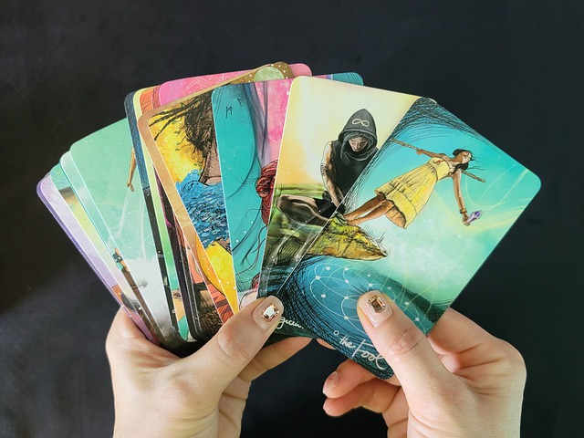

Acerca de mí
La Sibila Tarot es un proyecto que surge con el objetivo de abordar el tarot desde un enfoque holístico, moderno y accesible para todas las personas. Es una técnica que, aplicada de forma responsable y despojada de mitos y estigmas, nos puede ser de gran ayuda para nuestro crecimiento personal.
Principios de trabajo
Enfoque holístico, no predictivo
Las cartas nos indican tendencias, nos advierten o nos aconsejan sobre nuestro presente y muchas veces sobre lo que puede pasar. Pero lo cierto es que nadie sabe lo que puede suceder, y somos nosotros quienes tomamos las decisiones sobre nuestra vida todos los días. El tarot no es una sentence, sino que puede llegar a ser una guía.
Libre albedrío
Las lecturas y terapias ofrecidas solo se realizan a pedido de la persona que la solicita. No se realizan lecturas sobre terceros, ya que no dieron su consentimiento para ello, ni tampoco se realizan terapias para personas que no las han solicitado personalmente. Creemos y respetamos el libre albedrío de cada ser.
Responsabilidad individual
En una consulta no le decimos a la persona "lo que le va a pasar", ya que esto genera muchísima ansiedad y pone a quien consulta en una actitud de expectativa y ansiedad, impidiéndole ver que hay cuestiones que puede accionar a partir del presente al mismo tiempo que aceptando aquellas que no dependen de sí.